Joga · jogijski način življenjaYoga · the yogic lifestyle
Simona Simi
Certificirana učiteljica jogeCertified yoga teacher
Popeljem te skozi svojo prakso, v svet joge in jogijskega načina življenja. Let me take you through my practice, into the world of yoga and the yogic lifestyle.
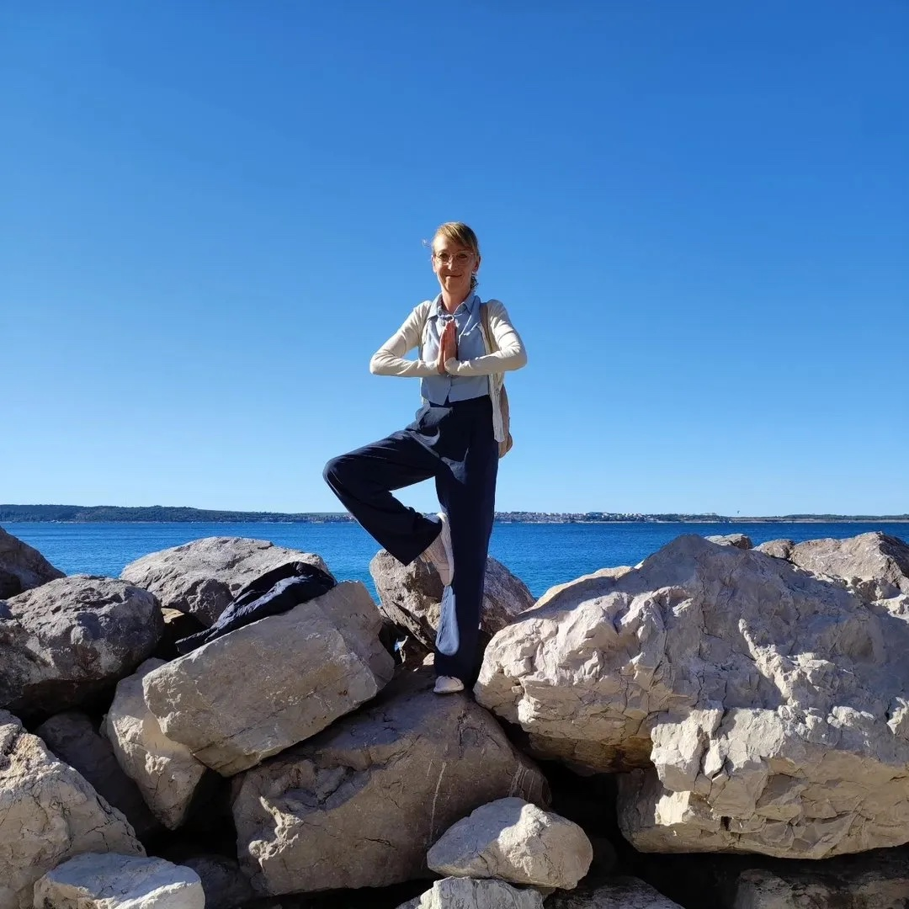
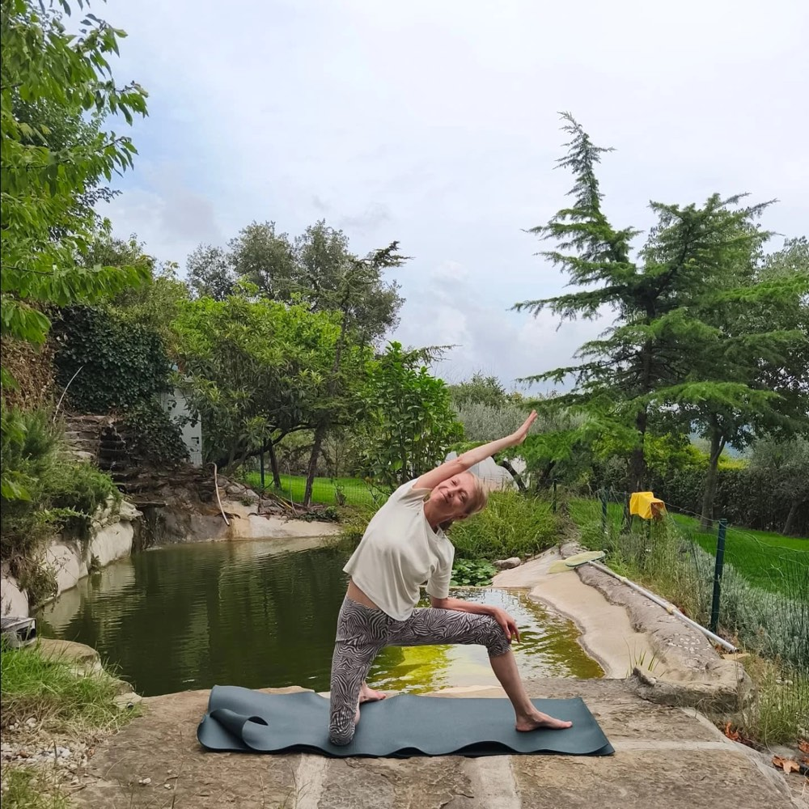
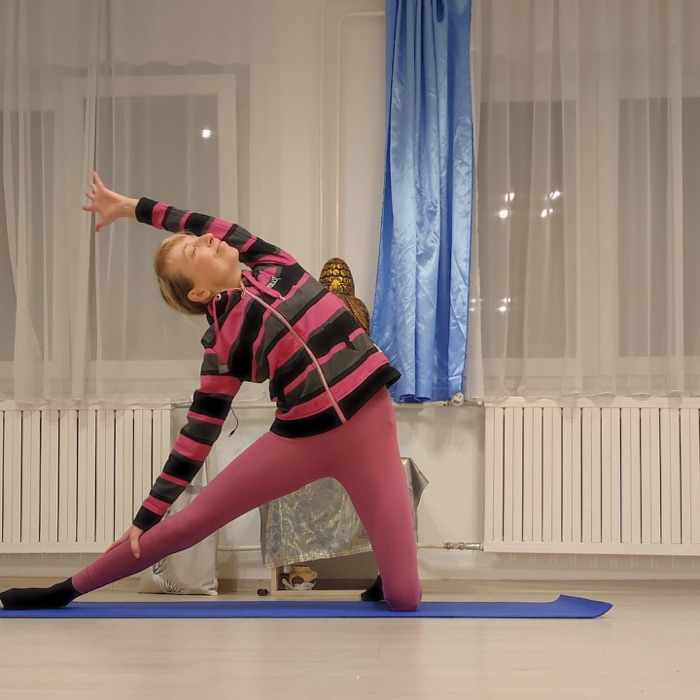
O meniAbout me
Joga v ritmu naraveYoga in the rhythm of nature
Sem Simona, certificirana učiteljica hatha, restorativne, yin in nosečniške joge ter joge na stolu, in inštruktorica SOMA.
Mojo prakso vodijo letni časi. Jogo povezujem s tradicionalno kitajsko medicino in ajurvedo: kateri organi in elementi so v ospredju, kaj potrebuje živčni sistem in kako se lahko upočasnimo, prizemljimo in spustimo, kar nam več ne služi.
Vsaka vadba se začne z opazovanjem. Zapremo oči in zaznamo zvoke, vonj, dih, utrip srca in napetost v mišicah. Vsakič uporabim drugo eterično olje, izbrano za namen te sadhane. Sem tudi ambasadorka Favn.
I'm Simona, a certified teacher of hatha, restorative, yin and prenatal yoga and chair yoga, and a SOMA instructor.
My practice follows the seasons. I combine yoga with traditional Chinese medicine and Ayurveda: which organs and elements are in the foreground, what the nervous system needs, and how we can slow down, ground ourselves and let go of what no longer serves us.
Every class starts with observation. We close our eyes and notice the sounds, the scent, our breath, our heartbeat and the tension in our muscles. Each time I use a different essential oil, chosen for the purpose of that sadhana. I'm also a Favn ambassador.
»Joga je kot vrtnarjenje. Ko narava počiva, moramo počivati tudi mi.«
“Yoga is like gardening. If nature is resting, we need to rest as well.”
Simona
JogaYoga
Vadbe, ki jih vodimClasses I teach
Joga je več kot asane: so tudi dihalne vaje, sprostitev in meditacija. Pomirja živčni sistem ter zmanjšuje znake stresa, napetosti in zakrčenosti. Yoga is more than asanas: it is also breathing exercises, relaxation and meditation. It calms the nervous system and eases the signs of stress, tension and stiffness.
-
Hatha jogaHatha yoga
Asane, dihalne vaje, sprostitev in meditacija. Hatha skrbi za krvni obtok in vrača ravnovesje v telo.
Asanas, breathing, relaxation and meditation. Hatha takes care of the circulatory system and brings balance back into the body.
-
Yin jogaYin yoga
Globoki, pasivni raztezki, ki jih zadržimo dlje časa. Podpira hormonski in limfni sistem ter parasimpatični živčni sistem, ki skrbi za počitek.
Deep, passive stretches held for longer. It supports the hormonal and lymphatic systems and the parasympathetic nervous system, which takes care of rest.
-
Restorativna jogaRestorative yoga
Med globokimi, pasivnimi raztezki počivaš in se sprostiš. Zmanjša togost, sprosti napetost, shranjeno v telesu, in umiri um. Protiutež hitremu tempu življenja.
During deep, passive stretches you rest and relax. It reduces stiffness, releases tension stored in the body and quiets the mind. An antidote to our fast-paced lives.
-
Nosečniška jogaPrenatal yoga
Joga, prilagojena času nosečnosti.
Yoga adapted to pregnancy.
-
Joga na stoluChair yoga
Joga sede na stolu ali z njegovo oporo.
Yoga seated on a chair or with a chair for support.
-
SOMA
Certificirana inštruktorica SOMA.
Certified SOMA instructor.
Opis vadbe SOMA: dopolniSOMA class description: to be added
Kje in kdajWhere and when
- Kraj vadbe: dopolniLocation: to be added
- Urnik vadb: dopolniClass schedule: to be added
- Cenik: dopolniPrices: to be added
Letni časiSeasons
Joga skozi letne časeYoga through the seasons
Narava nas uči, kdaj rasti in kdaj počivati. Po tradicionalni kitajski medicini (TKM) ima vsak letni čas svoj element in svoje organe, zato se z njim spreminja tudi vadba. Nature teaches us when to grow and when to rest. In traditional Chinese medicine (TCM) every season has its own element and organs, so the practice changes with it.
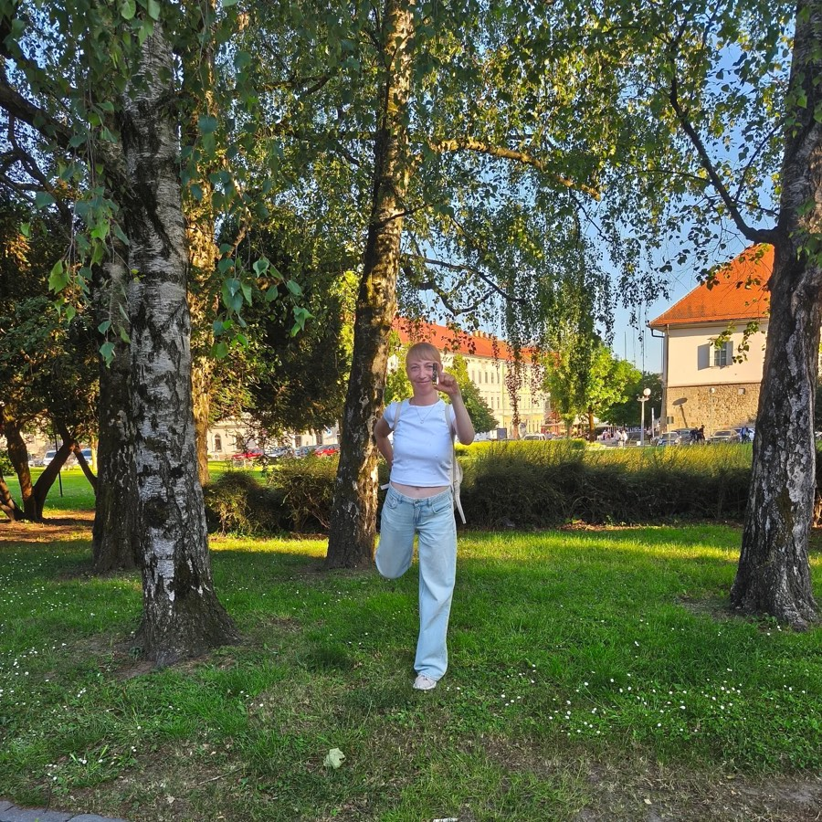
Korenine in sonceRoots and sun
Prebujanje in rastAwakening and growth
Pomlad je čas prebujanja, rasti in sprememb. Energijo črpamo od spodaj, iz zemlje in korenin: ko se stopala ukoreninijo, se zgornji del telesa odpre, dvigne in raste proti soncu.
Spring is a time of awakening, growth and change. We draw energy from below, from the earth and the roots: once the feet are rooted, the upper body opens, lifts and grows towards the sun.
V praksiIn practice
- Prizemljitev skozi stopala, nato dolžina in raztezanje v vsaki asani.
- Iztegni se proti soncu z odprtim srcem in začuti hvaležnost za njegove žarke.
- Pomladno čiščenje z domačimi čistili z vonjem agrumov: bergamotke, grenivke in limete.
- Grounding through the feet, then length and stretch in every asana.
- Stretch towards the sun with an open heart and feel gratitude for its rays.
- Spring cleaning with homemade cleaners scented with citrus: bergamot, grapefruit and lime.
Eterična olja: kamilica in ilang ilang za mir; poprova meta, evkaliptus in limona za lažje dihanje v času alergij. Essential oils: chamomile and ylang ylang for calm; peppermint, eucalyptus and lemon for easier breathing in allergy season.
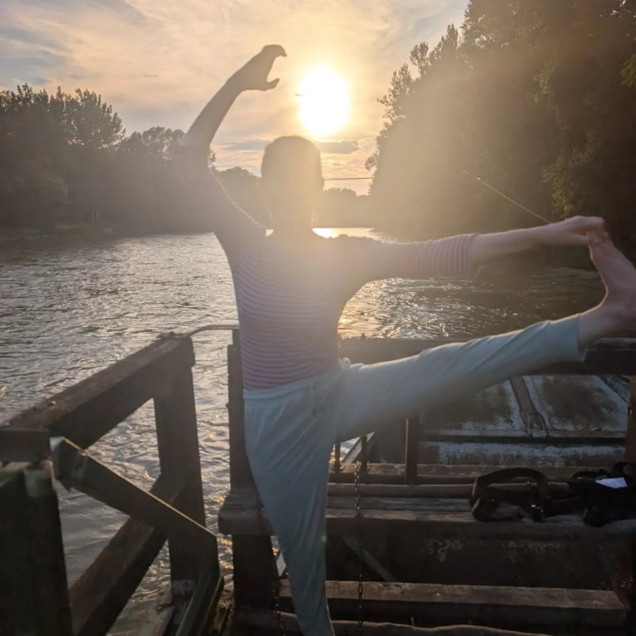
Element ognja · srceFire element · heart
Umiriti srceCalming the heart
Po TKM poletje pripada elementu ognja in srcu. Vročina in preveč dražljajev prineseta nemir, zato se poleti upočasnimo in umirimo shen, duha srca.
In TCM, summer belongs to the fire element and the heart. Heat and too much stimulation bring restlessness, so in summer we slow down and calm the shen, the spirit of the heart.
V praksiIn practice
- Vsaj 10 minut na dan meditacije, joge ali qigonga.
- Hladilna praksa: pozdrav luni, Nadi Shodhana in Sitali pranajama.
- Nežno gibanje: plavanje, ples, divji konj, hoja bosi. In kdaj tudi ne delati ničesar.
- At least 10 minutes a day of meditation, yoga or qigong.
- A cooling practice: moon salutation, Nadi Shodhana and Sitali pranayama.
- Gentle movement: swimming, dancing, wild horse, walking barefoot. And sometimes doing nothing at all.
Eterična olja: kamilica za miren spanec (kapljica na blazino), vrtnica za ljubezen do sebe. Essential oils: chamomile for calm sleep (a drop on your pillow), rose for self-love.
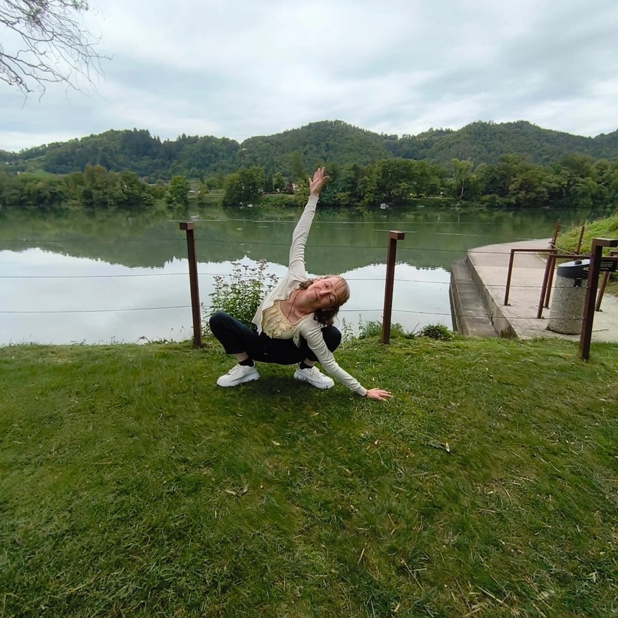
Element zemlje · vranica in želodecEarth element · spleen and stomach
Zemlja in prizemljitevEarth and grounding
Pozno poletje je v TKM povezano z elementom zemlje, z vranico in želodcem. Ta ne prebavljata le hrane, temveč tudi vse, kar melje naš um. Čas je za stabilnost, nego in meje pred zasloni.
In TCM, late summer is linked to the earth element, the spleen and the stomach. They digest not only food but everything our mind keeps chewing on. It's a time for stability, care and boundaries with screens.
V praksiIn practice
- Hoja bosi: z vsakim korakom si predstavljaj korenine, ki rastejo iz stopal.
- Reden urnik, posebej za zajtrk, vstajanje in spanje.
- Majhni »obroki«, tudi miselni, ki jih grizemo počasi in postopoma.
- Walk barefoot: with every step imagine roots growing from your feet.
- A steady routine, especially for breakfast, waking up and going to bed.
- Small “meals”, mental ones too, taken slowly and step by step.
Eterično olje: neroli, olje dobrega počutja. Pomirja nemiren um in živčen želodec. Essential oil: neroli, the oil of wellbeing. It calms a restless mind and a nervous stomach.
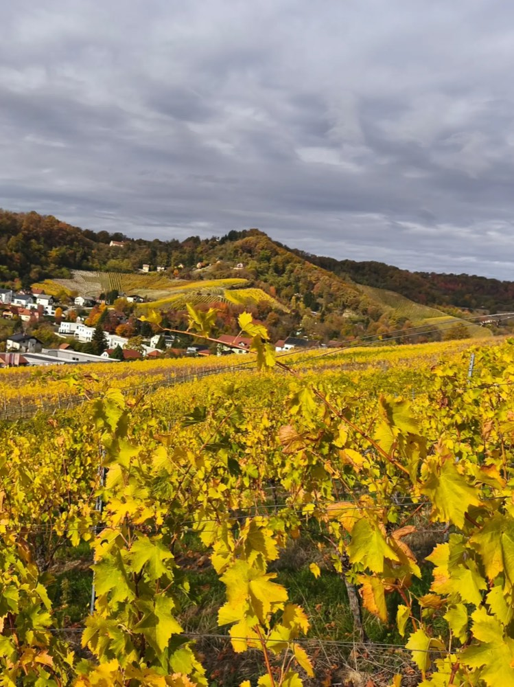
Element kovine · pljuča in debelo črevoMetal element · lungs and large intestine
SpuščanjeLetting go
Jesen po TKM pripada pljučem in debelemu črevesju, ki sta povezana z žalostjo in sposobnostjo spuščanja. Kot drevo odvrže liste, tudi mi spustimo, kar nam več ne služi. Ne na silo.
In TCM, autumn belongs to the lungs and the large intestine, which are linked to sadness and the ability to let go. As a tree drops its leaves, we let go of what no longer serves us. Without force.
V praksiIn practice
- Pranajama in trebušno dihanje: z vsakim izdihom spusti, kar se oklepa.
- Ravnotežne asane in asane na tleh, ki nas prizemljijo.
- Dlani položi na pljuča in trebuh ter ponovi: »Varna/varen sem, da spustim.«
- Topli obroki, reden ritem in zgodnje spanje.
- Pranayama and belly breathing: with every exhale, release whatever is holding on.
- Balancing and floor asanas that ground us.
- Place your palms on your lungs and belly and repeat: “I am safe to let go.”
- Warm meals, a steady rhythm and early nights.
Eterična olja: cipresa za mir in stabilnost ob spremembah, kardamom pri pretiranem razmišljanju, bosvelija za meditacijo. Essential oils: cypress for calm and stability through change, cardamom for overthinking, frankincense for meditation.
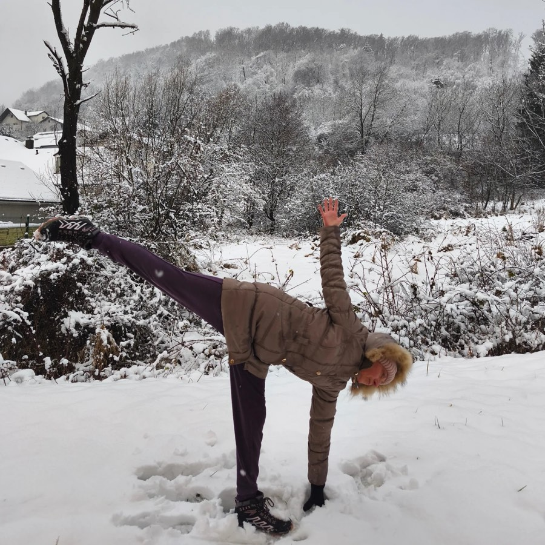
Zimski solsticijWinter solstice
Počitek in tišinaRest and stillness
Dolge zimske noči nas vabijo domov in vase. Tudi narava počiva, zakaj ne bi še mi? Upočasnimo se in pripravimo prostor, da bodo svetloba, energija in toplota v nas vzklile, ko bo čas zanje.
The long winter nights invite us home and inward. Nature rests, so why shouldn't we? We slow down and make room, so that light, energy and warmth can sprout in us when their time comes.
V praksiIn practice
- Yin in restorativna joga: dolgi, pasivni raztezki, med katerimi počivaš.
- Tiha meditacija ob svečki.
- Asana divji konj, da spustiš vse, kar želiš spustiti to leto.
- Počitek brez krivde.
- Yin and restorative yoga: long, passive stretches in which you rest.
- Silent meditation by candlelight.
- The wild horse asana, to release everything you want to let go of this year.
- Rest without guilt.
Eterična olja: cimet, kardamom in klinčki grejejo dušo in telo, pomaranča dvigne razpoloženje, vanilija prinese občutek doma. Essential oils: cinnamon, cardamom and clove warm body and soul, orange lifts the mood, vanilla brings a feeling of home.
AromaterapijaAromatherapy
Vonj, ki umiriScents that calm
Aromaterapija je najhitrejša pot do živčnega sistema. Vonj po vohalnem živcu potuje naravnost do limbičnega sistema, dela možganov, ki uravnava stres. Zato eterična olja vključujem v vsako vadbo, meditacijo in sprostitev. Aromatherapy is the fastest way to the nervous system. A scent travels along the olfactory nerve straight to the limbic system, the part of the brain that regulates stress. That's why I bring essential oils into every class, meditation and relaxation.
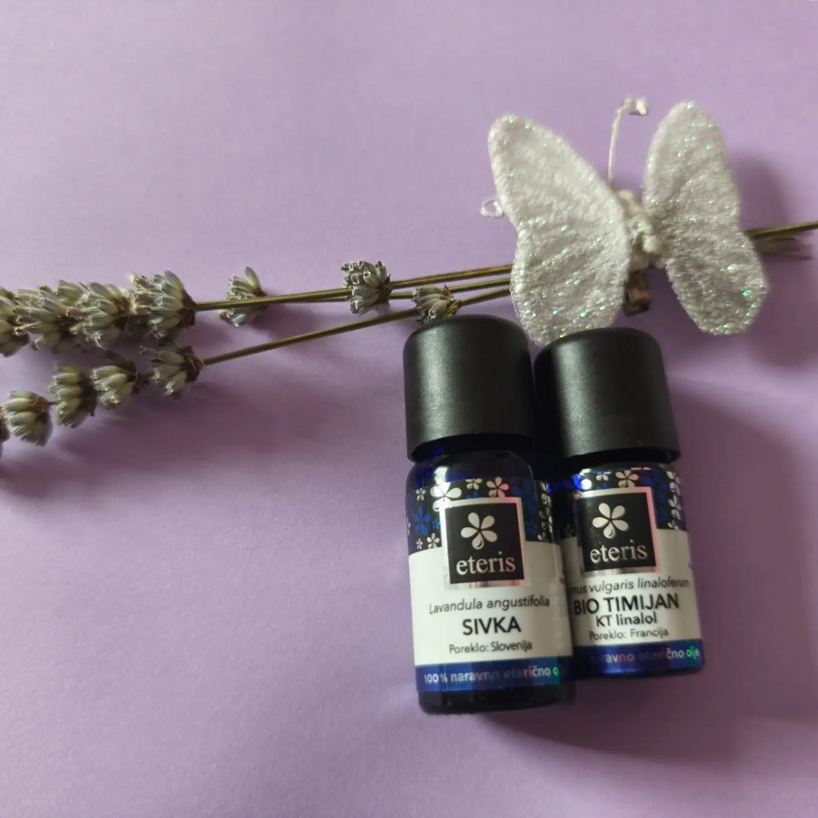
Moje mešaniceMy blends
-
Večerna difuzija za globok mirEvening diffusion for deep calm
- 2 kapljici nerolija
- 2 kapljici prave sivke
- 1 kapljica bosvelije
- 2 drops of neroli
- 2 drops of true lavender
- 1 drop of frankincense
V difuzor, pred spanjem.In a diffuser, before sleep.
-
Za jesensko vadbo jogeFor an autumn yoga class
- 3 kapljice pomaranče
- 2 kapljici bosvelije
- 1 kapljica pačulija ali vetiverja
- 3 drops of orange
- 2 drops of frankincense
- 1 drop of patchouli or vetiver
V difuzor, za spuščanje starega.In a diffuser, for letting go of the old.
-
Prizemljitvena kopel za stopalaGrounding foot bath
- 1 žlica mandljevega olja in 1 žlica soli
- 8 kapljic čajevca, 4 kapljice timijana, 5 kapljic sivke
- 1 žlica sode bikarbone
- 1 tbsp almond oil and 1 tbsp salt
- 8 drops of tea tree, 4 drops of thyme, 5 drops of lavender
- 1 tbsp baking soda
Olja zmešaj s soljo, dodaj sodo in vse vsuj v kopel.Mix the oils with the salt, add the soda and pour it all into the bath.
-
Zimsko razpršilo za obiskeWinter room spray for guests
- 20 kapljic vanilije
- 22 kapljic pomaranče, 3 kapljice cimeta
- 20 ml etanola in 30 ml vode
- 20 drops of vanilla
- 22 drops of orange, 3 drops of cinnamon
- 20 ml ethanol and 30 ml water
V razpršilko, pred prihodom gostov.In a spray bottle, before your guests arrive.
Vsako eterično olje pred nanosom na kožo razredči v rastlinskem olju, na primer jojobinem ali mandljevem, in ga ne nanašaj na sluznice in v oči. Eterična olja lahko začasno izboljšajo razpoloženje, ne pozdravijo pa negativnih ali bolečih čustev. Always dilute an essential oil in a carrier oil such as jojoba or almond before applying it to your skin, and keep it away from mucous membranes and eyes. Essential oils can lift your mood for a while, but they don't cure negative or painful emotions.
GalerijaGallery
Joga na prostemYoga outdoors
Ob jezeru, na snegu, ob reki ali na vrtu: za vadbo je dober vsak kotiček narave. By the lake, in the snow, by the river or in the garden: every corner of nature is a good place to practise.
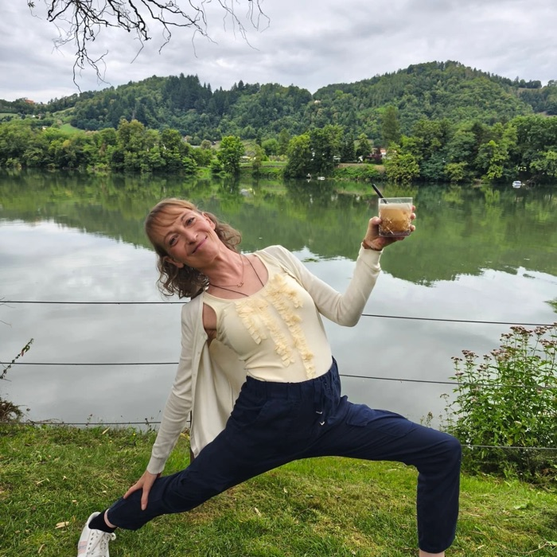
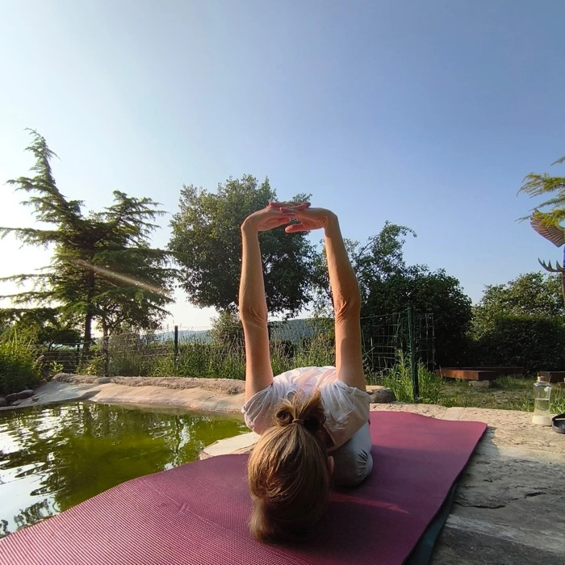
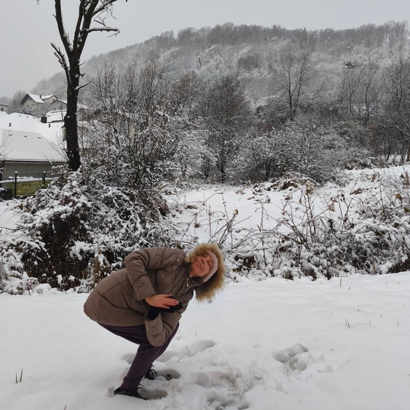
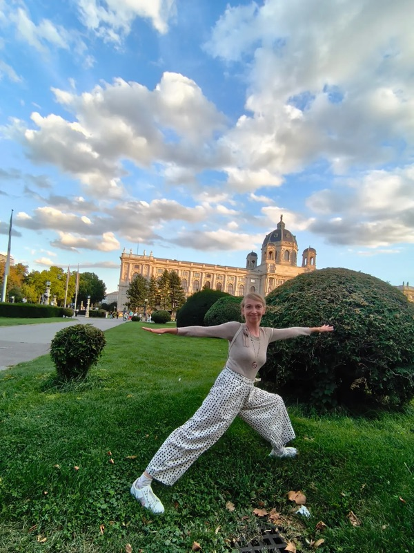
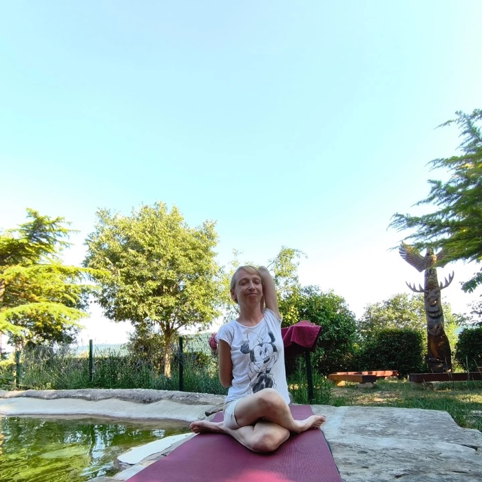
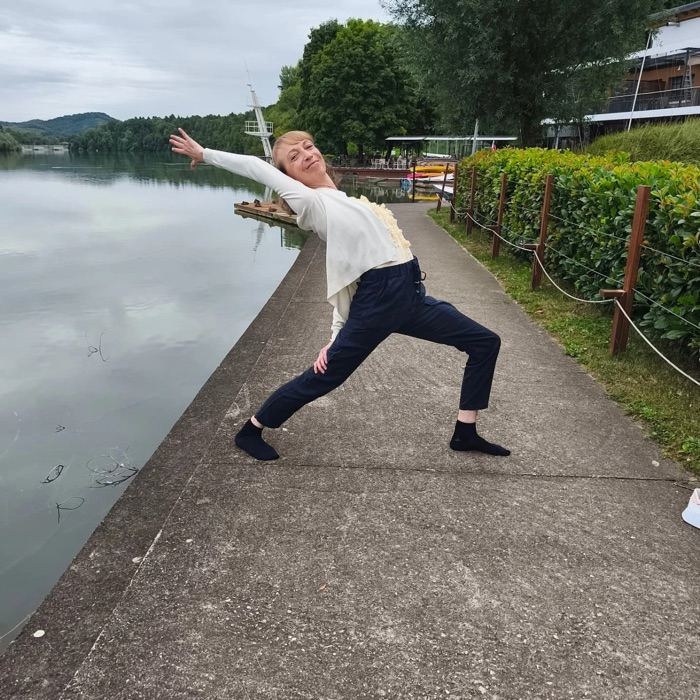
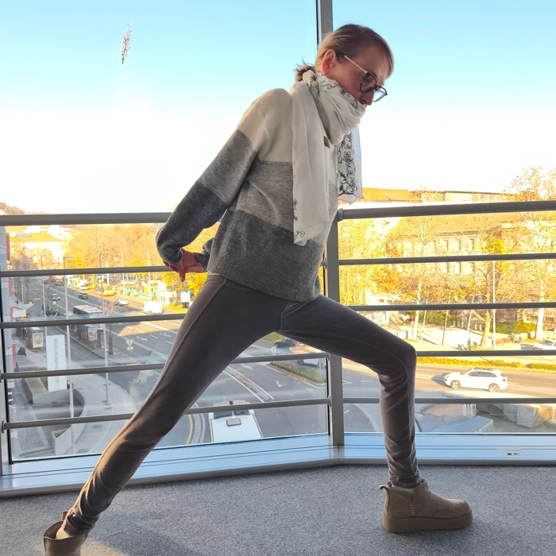
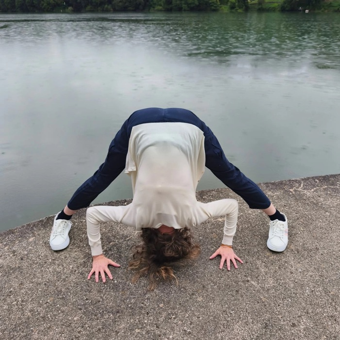
KontaktContact
Prijava na vadboSign up for a class
Za prijavo na vadbo, termine ali vprašanja o jogi in eteričnih oljih mi piši. To sign up for a class, ask about times, or ask anything about yoga and essential oils, send me a message.
- Pošlji sporočilo na InstagramuSend a message on Instagram
- @benka_simi
- Telefon: dopolniPhone: to be added
- E-pošta: dopolniE-mail: to be added
- Kraj vadbe: dopolniLocation: to be added
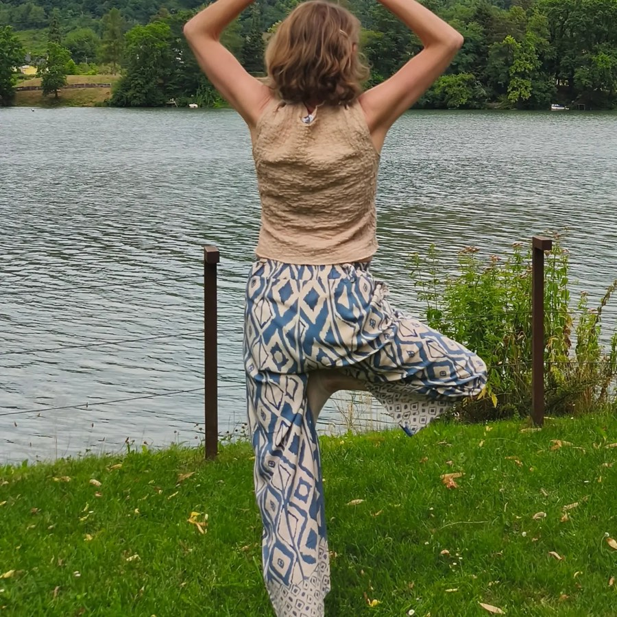